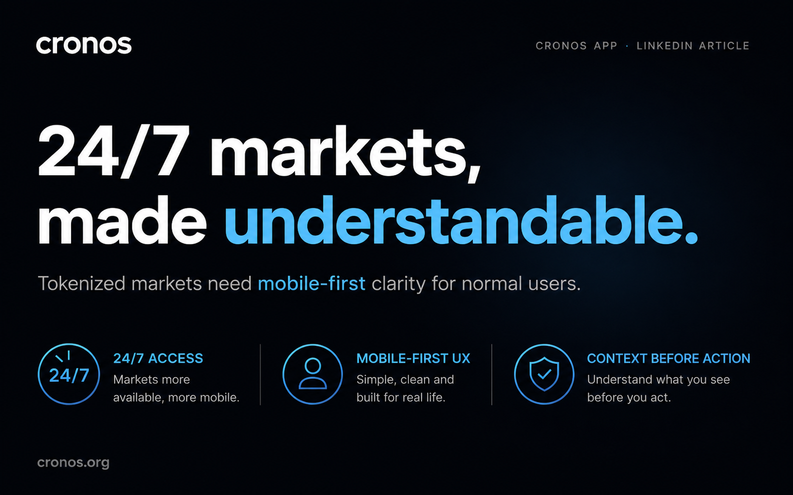

Perché l’APY non è il vero punto della nuova proposta CRO
Il punto non è solo il rendimento: conta come si costruiscono incentivi, fiducia e sostenibilità.
Italiano
Un archivio completo dei contenuti in italiano, tra articoli Medium e note LinkedIn.
Archivio italiano
Dal più recente al più vecchio, con pagina interna e fonte originale per ogni pezzo.
Il punto non è solo il rendimento: conta come si costruiscono incentivi, fiducia e sostenibilità.

Parole semplici e onboarding chiaro riducono il rumore e fanno sentire l'utente più sicuro.
Se il prodotto è buono, spiegare bene il suo valore fa parte del prodotto stesso.